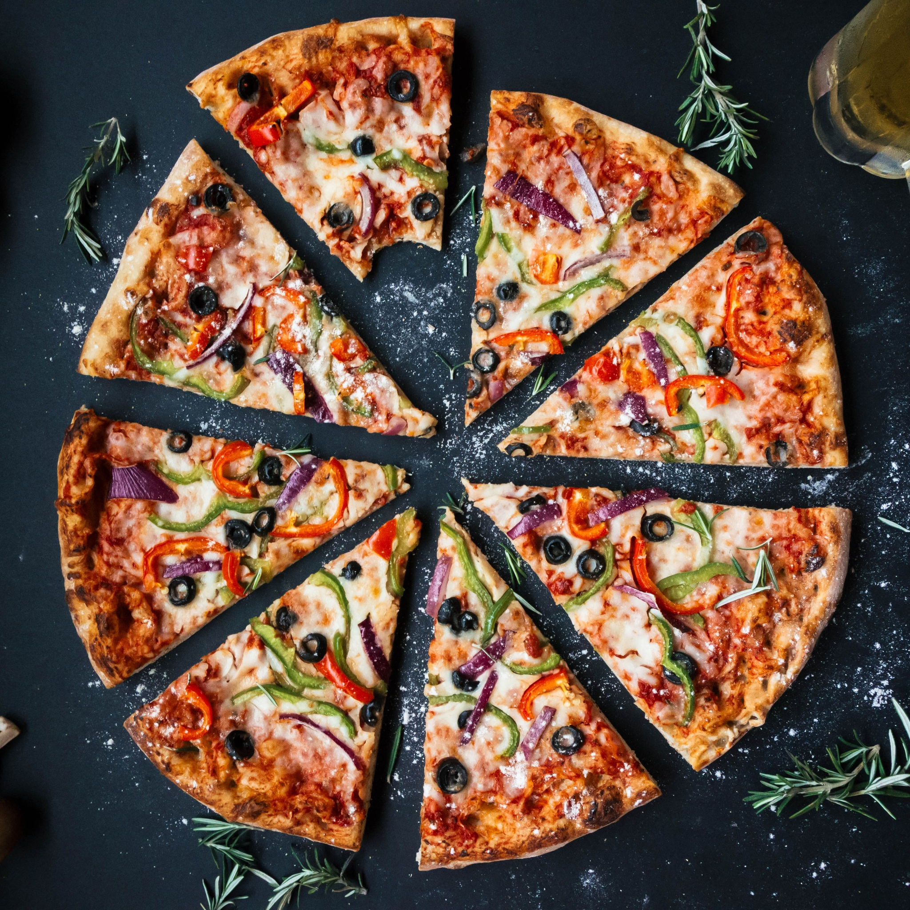
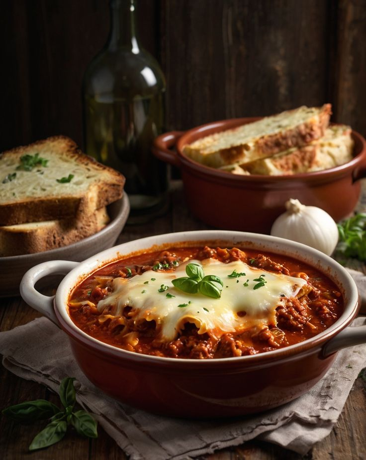
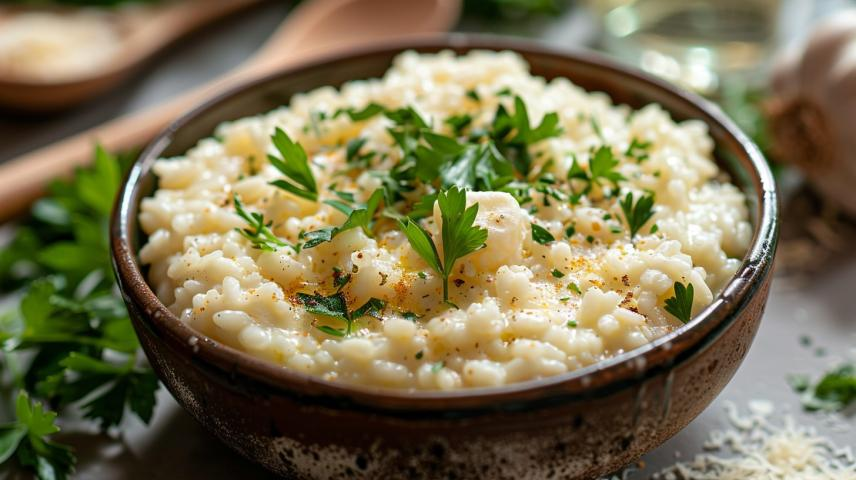

Italian Cuisine

Pizza
Ingredients:
- Dough
- Tomato sauce
- Mozzarella cheese
- Various toppings (pepperoni, mushrooms, onions)
Instructions:
- Roll out the dough, spread tomato sauce, sprinkle mozzarella, add toppings.
- Bake at 220°C (425°F) for 15-20 minutes.

Pasta
Ingredients:
- Spaghetti
- Olive oil
- Garlic
- Parmesan cheese
- Fresh basil
Instructions:
- Boil the pasta.
- Sauté garlic in olive oil.
- Mix with cooked pasta, garnish with parmesan and basil.

Lasagna
Ingredients:
- Lasagna sheets
- Ground beef
- Ricotta cheese
- Mozzarella cheese
- Marinara sauce
Instructions:
- Layer lasagna sheets with meat sauce, ricotta, and mozzarella.
- Bake at 190°C (375°F) for 30-40 minutes.

Risotto
Ingredients:
- Arborio rice
- Chicken broth
- White wine
- Parmesan cheese
- Butter
Instructions:
- Sauté rice in butter.
- Gradually add broth and wine while stirring.
- Finish with parmesan cheese.